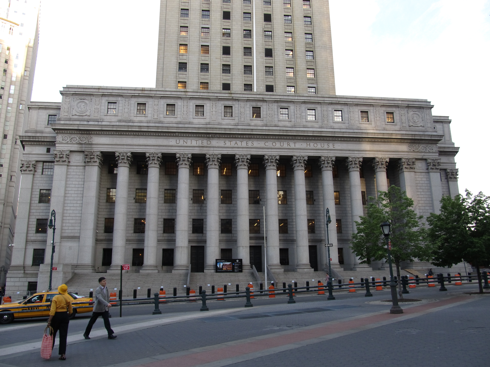

Executive Summary
2026년 5월, 엘스비어를 비롯한 5개 출판사가 메타와 마크 저커버그 개인을 상대로 소송을 냈습니다. 쟁점은 의외의 곳에 있습니다. "Llama가 우리 책으로 학습했다"가 아니라 "메타가 그 책들을 어디서 어떻게 손에 넣었나"입니다. 토렌트로 267테라바이트를 내려받고, 추적을 피하려 IP를 숨기고, 저작권 표시를 지웠다는 것. 피고석에 선 것은 모델이 아니라 데이터를 취득한 방식입니다.
이 전환은 이미 판례로 자리 잡고 있습니다. Anthropic은 'AI 훈련은 공정이용'이라는 약식판결에서 이기고도, '해적 데이터를 내려받아 보관한 행위'에서 져 15억 달러에 합의했습니다. 미국 저작권 소송 사상 최대 공개 회수액입니다. 법원이 훈련과 데이터 취득을 갈라서 보기 시작하면서, '데이터 출처 불명'이라는 거버넌스 용어가 곧바로 배상액과 사본 폐기 명령으로 환산됐습니다.
데이터를 다루는 쪽에 이 사건이 보내는 신호는 분명합니다. 모델의 가치가 성능 벤치마크에서 데이터의 족보로 옮겨가고 있다는 것입니다. 이 글은 메타·Anthropic·국내 소송 세 갈래를 데이터 출처 증명(lineage)이라는 한 줄기로 꿰어, 출처를 설명할 수 있는 능력이 왜 곧 인프라가 되는지를 짚습니다.
주요 수치
출처: Holland & Knight, NPR, Digital Journal
네 숫자가 이 사건의 무게를 한눈에 보여 줍니다. 메타가 해적 사이트에서 내려받았다고 지목된 데이터의 규모, Anthropic이 합의로 내놓은 금액, 그리고 데이터를 사고파는 현장에서 출처 검증이 얼마나 비어 있는지, 그 공백을 뒤늦게 메우는 데 드는 비용까지. 출처가 추상이 아니라 돈이라는 사실이 이 안에 들어 있습니다.
267TB
메타가 받은 저작물
LibGen 등 해적 사이트에서 토렌트로 내려받았다고 지목된 규모
$15억
Anthropic 합의금
저작물당 약 $3,000 × 50만 권. 미 저작권 사상 최대 공개 회수액
78%
검증 못 하는 데이터 파트너
조달 평가에서 학습 데이터를 검증하지 못한 AI 데이터 파트너 비율
4~5배
사후 문서화 비용
출처 기록을 나중에 끼워 맞출 때 드는 비용 + 수개월 출시 지연
피고석에 선 건 Llama가 아니라 데이터의 출처였다
2026년 5월 5일, 엘스비어·센게이지·아셰트·맥밀런·맥그로힐 다섯 출판사와 베스트셀러 작가 스콧 터로가 뉴욕 남부지방법원에 소장을 냈습니다. 피고는 메타 플랫폼스, 그리고 마크 저커버그 개인입니다. 사건명은 Elsevier v. Meta, 사건번호 1:26-cv-03689입니다. 흔히 떠올리는 'AI가 내 글로 학습했다'는 구도와는 결이 다릅니다.
소장이 정조준한 것은 데이터를 손에 넣은 방식입니다. 메타가 Llama를 학습시키려고 LibGen과 Anna's Archive 같은 해적 도서관(shadow library)에서 267테라바이트가 넘는 저작물을 토렌트로 내려받았다는 것. 미 의회도서관 인쇄 장서의 수십 배에 해당하는 규모입니다. 여기에 토렌트 과정에서 IP 주소를 가려 추적을 피하고, 받은 책에서 저작권 관리정보(CMI)와 저작권 표시를 지워 출처를 덮었다는 주장이 더해집니다. 2023년 봄, 정식 라이선스 협상을 접고 해적 경로를 택했다는 정황도 적혀 있습니다.

그래서 청구도 둘로 나뉩니다. 하나는 고의적 저작권 침해, 다른 하나는 CMI 제거 자체에 대한 책임입니다. 모델이 무엇을 출력했느냐가 아니라, 데이터를 어떻게 모으고 어떤 표식을 지웠느냐가 다툼의 핵심입니다. 메타는 "공격적으로 다투겠다"는 입장이고 사건은 진행 중이지만, 질문의 무게중심이 옮겨갔다는 사실만큼은 또렷합니다.
핵심: 이 소송에서 위험은 모델 안이 아니라 데이터가 들어오는 입구에 있습니다. 무엇을 학습했는지보다 그 데이터를 어디서, 어떻게, 어떤 표식을 지우고 들여왔는지가 책임을 가릅니다.
법원이 그은 선: 훈련은 공정이용, 해적 보관은 책임
메타 소송이 왜 데이터 취득 방식을 파고드는지는 한 발 앞선 판례를 보면 이해됩니다. Bartz v. Anthropic에서 윌리엄 알섭 판사는 2025년 6월 약식판결로 선 하나를 그었습니다. 합법적으로 취득한 책으로 모델을 훈련하는 것은 변형적 사용에 해당해 공정이용이다. 그러나 해적 사본을 내려받아 보관한 행위는 별개의 침해다. 같은 회사가 한 활동을 둘로 쪼개, 앞에서는 이기고 뒤에서는 진 것입니다.

결과는 2025년 9월의 합의로 이어졌습니다. 공정이용 방어가 일부 통했음에도 Anthropic은 15억 달러를 내놓기로 했습니다. 대상은 LibGen·PiLiMi 같은 해적 데이터베이스에서 받은 약 50만 권, 저작물당 약 3,000달러 규모입니다. 합의 조건에는 해당 사본의 폐기가 포함됐고, 합의는 과거 훈련 행위에 한정돼 모델 산출물을 둘러싼 다툼은 그대로 열려 있습니다.
모든 법원이 똑같이 보는 것은 아닙니다. 같은 시기 Kadrey v. Meta에서 차브리아 판사는 "데이터 출처가 합법이든 아니든 훈련 자체는 공정이용"이라는 쪽에 무게를 실었습니다. 취득 방식이 공정이용 분석에 얼마나 영향을 주는지를 두고 법원 사이에 미묘한 분열이 있는 셈입니다. 다만 한 지점에서는 모두 같은 방향을 가리킵니다. 해적 데이터를 따로 받아 보관하면, 그 보관 행위 자체에서 책임이 생긴다는 것입니다.
왜 중요한가: 법원이 '훈련'과 '데이터 취득·보관'을 분리하는 순간, 모델이 합법적으로 잘 작동하는지와 무관하게 데이터를 어디서 받았는지가 독립된 책임의 원천이 됩니다. 출처 증명의 무게는 바로 이 분리에서 생깁니다.
15억 달러가 번역한 것: 출처 불명은 손해배상액이다
15억 달러를 데이터 담당자의 언어로 옮기면 이렇게 됩니다. 저작물당 약 3,000달러에 약 50만 권을 곱한 값. '데이터 출처가 불명확하다'는 한 줄짜리 거버넌스 메모가, 한 권 한 권에 가격표가 붙은 청구서로 환산된 것입니다. 거기에 사본을 폐기하라는 명령까지 더해지면, 학습에 쓴 데이터를 되돌려 지워야 하는 운영 비용도 따라옵니다.
이 산수가 무서운 이유는 합산 구조에 있습니다. 저작물 하나하나는 작은 금액이지만, 집단소송으로 50만 권이 한 클래스로 묶이면 총액이 폭발합니다. 출처를 설명하지 못하는 데이터셋은 한 건의 분쟁이 아니라, 그 안에 든 항목 수만큼의 청구를 동시에 떠안는 폭탄이 됩니다. 데이터의 양이 곧 리스크의 곱셈 계수로 작동하는 셈입니다.
법률 분석가들이 이 합의에서 끌어낸 교훈도 같은 곳을 향합니다. 합법적인 데이터 소싱이 공정이용 방어의 전제라는 것, 그리고 불법 지름길은 결국 더 비싼 길로 돌아온다는 것입니다. 출처 증명은 규제 대응 서류가 아니라, 청구서의 자릿수를 결정하는 변수였습니다.
한 줄 요약: 출처 불명은 더 이상 문서 결함이 아니라 회계 항목입니다. 데이터의 족보를 설명하지 못하면, 그 데이터에 담긴 항목 수만큼의 손해배상 가능성을 그대로 떠안게 됩니다.
구매자와 규제가 먼저 족보를 묻는다
법원만 출처를 따지는 게 아닙니다. 규제와 시장이 동시에 데이터의 족보를 요구하기 시작했습니다. 규제 쪽에서는 EU AI Act가 2026년 8월 본격 시행에 들어갑니다. 범용·고위험 모델은 학습 데이터의 출처와 구성을 요약해 공개해야 하고, 어기면 최대 1,500만 유로 또는 글로벌 매출의 3%가 걸립니다. 데이터를 모으는 단계부터 배포까지의 추적성을 요구하는 조항입니다.

시장 쪽 변화는 더 빠릅니다. 자율주행과 로보틱스 프로그램이 양산 단계로 넘어가면서, 데이터를 구매하는 조달팀의 평가 기준이 단가와 라벨링 물량을 넘어 데이터 계보, 보안 인증, 운영 성숙도로 옮겨갔습니다. 벤더 질의서에 'ISO 42001 인증 또는 로드맵'을 묻는 항목이 표준이 되어 가고 있습니다. 그런데 현장에서 드러난 수치는 뼈아픕니다. AI 데이터 파트너의 78%가 학습 데이터를 검증하지 못하고, 77%가 출처를 추적하지 못합니다. 기술력과 무관하게 문서화 격차 하나로 엔터프라이즈 계약이 무산되는 일이 벌어집니다.
같은 질문이 한국 법정에도 들어왔습니다. KBS·MBC·SBS 지상파 3사는 2025년 1월 뉴스 데이터를 AI 학습에 무단으로 썼다며 네이버를 상대로 국내 첫 AI 뉴스 학습 소송을 냈고, 2026년 2월에는 OpenAI를 상대로도 침해 금지와 손해배상을 청구했습니다. 쟁점은 해외와 똑같습니다. 그 데이터를 쓸 권리의 근거가 무엇이고, 출처를 어떻게 설명할 것인가. 2026년 1월 시행된 AI 기본법이 학습 데이터·저작권 공백을 명시적으로 메우지 못한 상태여서, 당분간 답은 법원이 씁니다.
달라진 것: 출처를 묻는 주체가 법원에서 규제기관과 구매자로 넓어졌습니다. 모델을 사는 쪽은 이제 성능 벤치마크보다 먼저 데이터의 족보 서류를 요구하고, 그 서류를 내놓지 못하는 공급자는 협상 테이블에 앉기도 전에 탈락합니다.
다음 실사는 가중치가 아니라 데이터 족보다
세 갈래의 사건을 한자리에 모으면 하나의 방향이 보입니다. 메타 소송은 데이터 취득 방식을 피고석에 세웠고, Anthropic 합의는 출처 불명에 가격표를 붙였으며, 규제와 조달은 그 가격표를 거래 이전 단계로 끌어왔습니다. 모델 자산의 가치를 매기는 기준이 가중치의 성능에서 데이터 계보의 증명으로 옮겨가는 중입니다.

실무로 내려오면 준비할 것은 분명합니다. 어떤 데이터를 어디서, 어떤 권리로, 언제 받아 어떻게 가공했는지를 추적 가능하게 기록해 두는 일입니다. 이 기록을 뒤늦게 끼워 맞추려 하면 비용은 4~5배로 뛰고 출시는 수개월 밀립니다. 출처 증명을 처음부터 파이프라인에 내장한 조직만이, 소송과 규제, 구매자의 실사 어느 쪽이 닥쳐도 같은 서류로 답할 수 있는 활주로를 갖게 됩니다.
모델을 사고파는 자리에서 다음에 펼쳐질 실사 서류는 가중치 파일이 아닐 가능성이 큽니다. 이 데이터를 어디서 구했고, 그 권리를 어떻게 증명하느냐는 족보 문서일 것입니다. 규제가 공개를 요구하든, 법원이 책임을 묻든, 구매자가 계보를 따지든, 답해야 하는 질문은 결국 하나로 모입니다. 이 모델은 어떤 데이터로 만들어졌으며, 그것을 당신은 설명할 수 있는가.
마무리: 출처 증명은 규제 대응 문서가 아니라, 거래를 성사시키고 소송을 막는 인프라가 되어 가고 있습니다. 다음 시대에 모델을 사고파는 모두가 가장 먼저 확인하게 될 자산은, 데이터의 족보를 설명할 수 있는 능력입니다.
참고문헌
업계·보도
- 1.Holland & Knight. (2026). "Major Publishers Challenge AI Training Practices in Landmark Copyright Suit Against Meta." Holland & Knight Insights. — Elsevier v. Meta 사건 요약. 267TB, IP 마스킹, CMI 제거, 저커버그 개인 피고 지정.
- 2.Norton Rose Fulbright. (2026). "AI in Litigation Series: An Update on AI Copyright Cases in 2026." Norton Rose Fulbright. — 2026년 주요 판례 일람과 '훈련 ≠ 해적 보관' 분리 독트린 정리.
- 3.NPR. (2025). "Anthropic pays authors $1.5 billion to settle copyright infringement lawsuit." NPR. — Bartz v. Anthropic 15억 달러 합의 보도.
- 4.Buchanan Ingersoll & Rooney. (2026). "Anthropic's Copyright Settlement: Lessons for AI Developers and Deployers." BIPC. — 합법 소싱이 공정이용 방어의 전제라는 개발사·도입사 관점 교훈.
- 5.Digital Journal. (2026). "What enterprise procurement teams actually find when they evaluate AI data partners." Digital Journal. — 조달팀의 lineage·ISO 42001 요구, 78%·77% 검증 불가 수치, 소급 문서화 4~5배 비용.
- 6.서울신문. (2026). "AI 데이터 무작위 학습 제동 걸리나… 테크 공룡 상대 저작권 소송 봇물." 서울신문. — 지상파 3사 대 네이버·OpenAI 등 국내 AI 학습 저작권 소송 동향.
공식 문서
- 7.Association of American Publishers. (2026). "Elsevier v. Meta — Complaint (Case No. 1:26-cv-03689)." S.D.N.Y. — 소장 원문(1차 자료). 고의적 저작권 침해 및 CMI 위반 청구.
- 8.Susman Godfrey LLP. (2025). "Susman Godfrey Secures $1.5 Billion Settlement in Landmark AI Piracy Case." Susman Godfrey. — Bartz v. Anthropic 원고측 1차 자료.